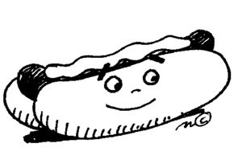

Carrera armamentista alimenticia
 De: La Frikipedia, la enciclopedia extremadamente seria.Se le llama así a la competencia bélica por obtener la comida chatarra más dañina. Iniciada por la ciudad de Hansiatis, creadora de la hamburguesa y por eso hoy conocida como Hamburgo, se ha prolongado durante siglos. Hoy en día la mayoría ignora que el objetivo principal de la comida chatarra es matar.
De: La Frikipedia, la enciclopedia extremadamente seria.Se le llama así a la competencia bélica por obtener la comida chatarra más dañina. Iniciada por la ciudad de Hansiatis, creadora de la hamburguesa y por eso hoy conocida como Hamburgo, se ha prolongado durante siglos. Hoy en día la mayoría ignora que el objetivo principal de la comida chatarra es matar.

En épocas pasadas, esta mujer sería calificada con 11 en la escala de valentía que iba del 1 al 10
Inicio
El inicio de la carrera armamentística alimenticia data del año 808 d.C., cuando alquimistas de Hansiatis estuvieron por varios meses experimentando con ratas y vacas locas para crear un mortal alimento que sería conocido después como Hamburguesa. Este alimento cobró la vida de miles de heroicos combatientes medievales que cayeron ante su sanguinario sabor. De esta forma, la ciudad de Hansiatis fue prosperando por la Hamburguesa, razón por la cuál pasó después a llamarse Hamburgo.
El increíble progreso de Hamburgo causó la envidia de naciones vecinas, las cuales fueron desarrollando su propia comida chatarra. Mientras tanto, los ejércitos enemigos iban desarrollando resistencia contra la hamburguesa. Los alquimistas, en alianza con los chefs, iniciaron su carrera.
Descubrimiento de América
Fue tras el descubrimiento de América cuando los ingenieros alimentarios europeos lograron tener acceso a mortíferos ingredientes, cuyos resistentes pobladores americanos comían habitualmente. Se dice que fue un intercambio armamentístico entre ambos mundos, los europeos llevaron a los pueblos americanos armas biológicas, que desgraciadamente se les salieron bajo control y causó la muerte del 80% de los pobladores de ese continente. Paradójicamente, los ingredientes que se utilizarían para la comida chatarra en lugar de diezmar la población europea, provocó que esta creciera.
Auge
El auge de la carrera se da en el siglo XVI, logrando que los italianos desarrollaran la pizza, que les agenciaría algunas importantes batallas. Los franceses usaron las papas traídas del Perú para desarrollar las papas a la francesa, también conocida como papas fritas.
España, líder en la carrera
Sin embargo, es España quien lidera esta carrera, al ser la potencia colonizadora más grande del mundo. Mas este mérito no es español, sino americano, pues era en el nuevo continente donde se desarrollaba la comida. Nueva España, hoy conocida por México. fue la colonia que más productos bélicos desarrollo, siendo entre sus primeras aportaciones el chocolate.
El chocolate podía ser preparado y mezclado de ciento de formas, lo cuál lo hacía fructífero como ingrediente de guerra. Sin embargo, este sólo afectaba a una pequeña parte de la población, que no podía resistir su increíble sabor. Mientras sólo algunos morían por su causa, se fue volviendo bebida clásica española, símbolo de valentía.
Las carnes de vaca y puerco, desconocidas por el mundo prehispánico, sirvieron también para mezclarlas con los productos americanos. Es así como nace alimentos como la cochinita pibil o los tacos de suadero. Son los burritos con chile también uno de los alimentos más mortíferos.
Descubrimiento del chile.
El Hernando de Magallanes, cuando navegaba por el estrecho que por pura casualidad lleva su mismo nombre, en el año de 1520. Hernando de Magallanes no pudo prever el alcance de este producto y le vendió la patente a Nueva España. Sin embargo, en honor al chile se nombró así a un país.
Sería este el ingrediente principal de mortíferos alimentos, como el mole poblano, la cochinita pibil y toda variante de tacos. Así como beber chocolate, el pueblo mexicano comía chile probando su valentía, como consuelo de haber perdido con los debiluchos españoles, eso sí, llenos de viruela.
Fin de la carrera
 Aunque fue creado para matar, el hot dog no tuvo el éxito esperado
Competencias
Aún hoy en día se conservan algunas antañas competencias de comida, cuyo objetivo era demostrar la valentía y fortaleza de los soldados, ingiriendo grandes cantidades de comida chatarra sin caer muertos. Ese fue uno de los factores de importancia para el desarrollo de inmunidad ante ella.
Autor(es):
- Fordus
- JacintoCanek
- Orko
- Dark temptation
- Um
- 62666
- V for Vendetta
- Th´albert
Frikipedia 2005-2016, Licencia
GFDL 1.2 - Extraído por FrikiLeaks